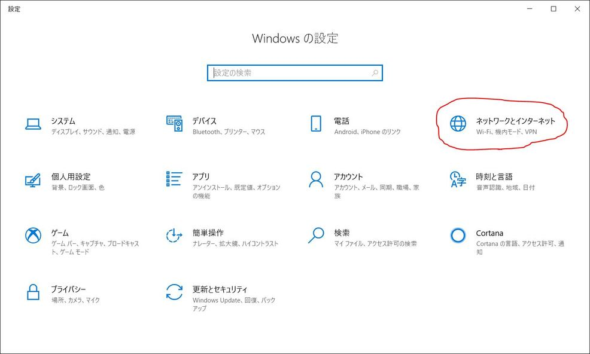
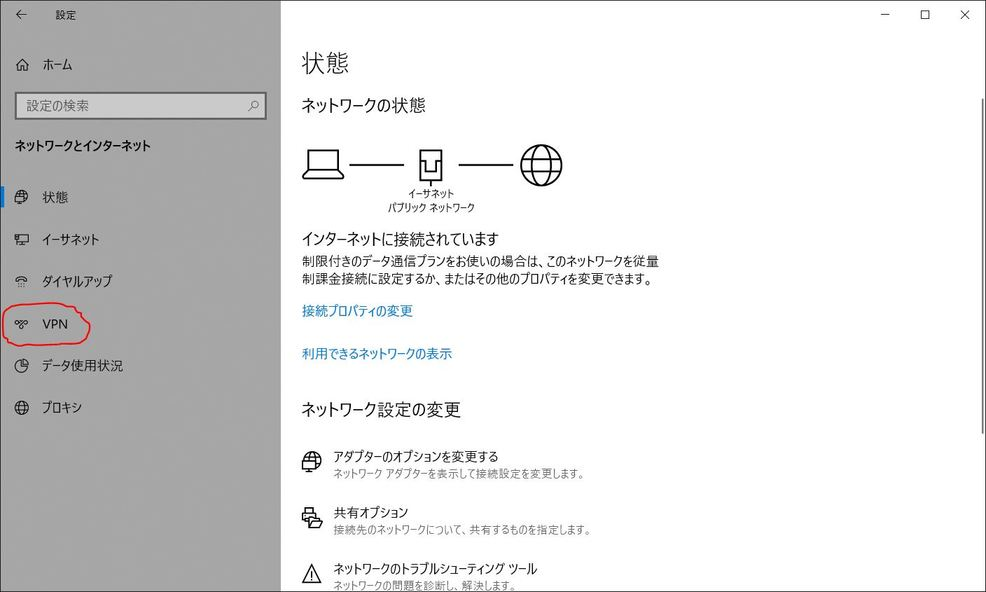
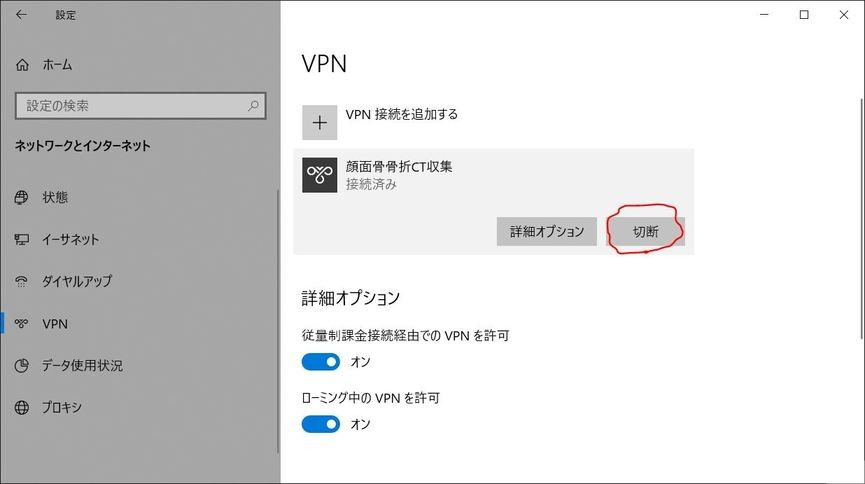
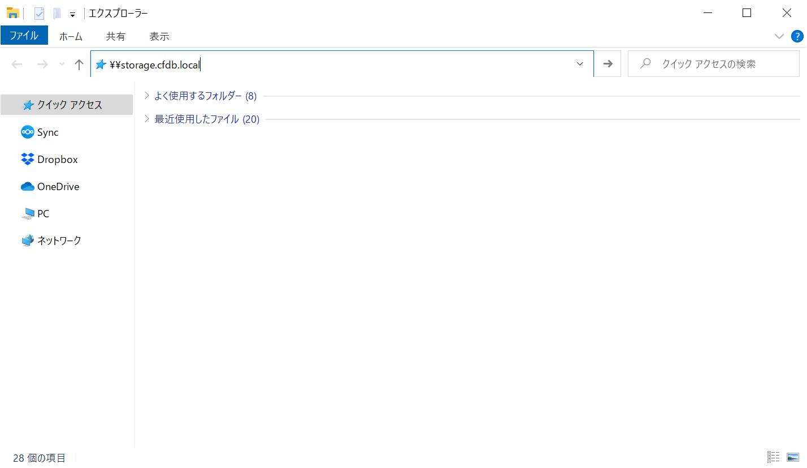
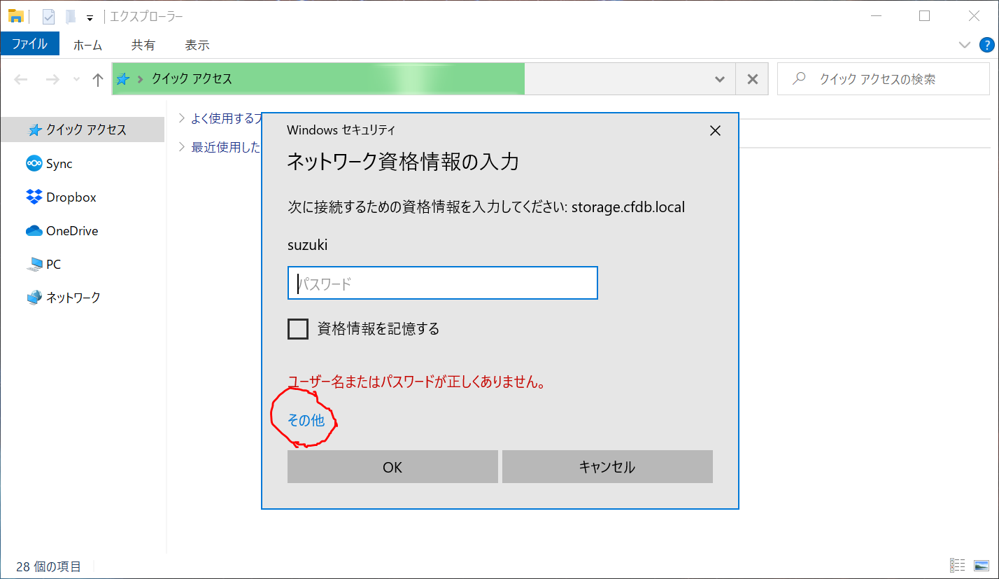
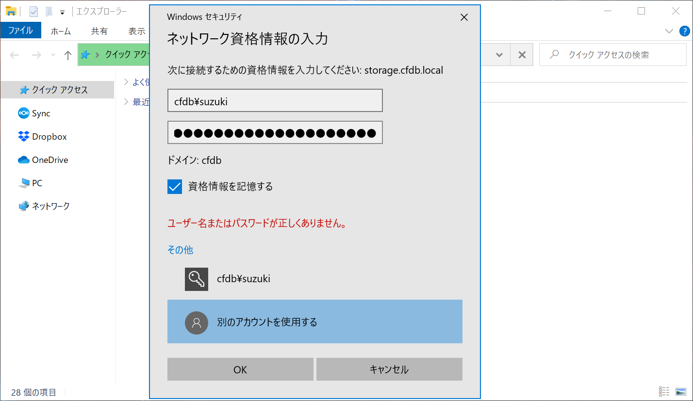
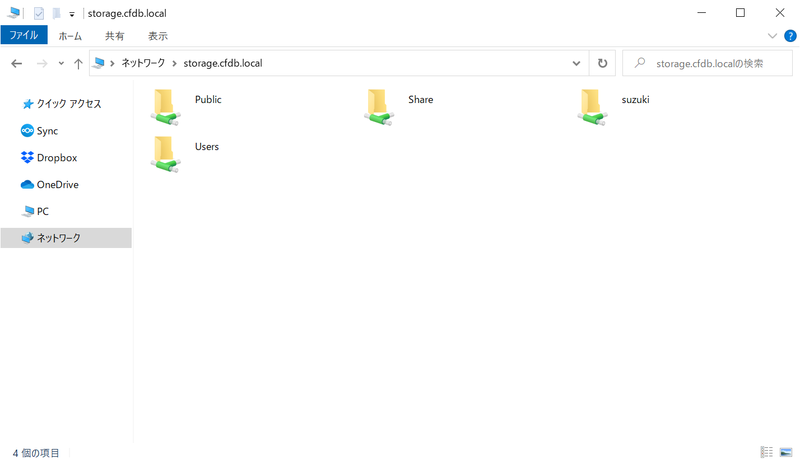

VPN接続¶
初期設定¶
ネットワークとインターネットを開く

VPN設定画面を開く

VPN接続を追加する

VPN接続の設定を行う
接続名 : 顔面骨骨折CT収集
サーバー名またはアドレス : 別紙参照
事前共有キー : 別紙参照
ユーザー名：別紙参照
パスワード：別紙参照

VPN接続を行う

接続済みになれば成功

終了時には切断する

ファイルサーバーへのアクセス¶
VPN接続を行う。(＊上記VPN接続を参照)
ファイルエクスプローラを開く。
アドレスバーに \\storage.cfdb.local と入力しエンター。

パスワード入力を促されるので、その他をクリック

ユーザー名とパスワードを入力
ユーザー名 : cfdb\別紙参照
パスワード : 別紙参照

Public, Share等のフォルダが表示されれば成功

ファイルのアップロード¶
匿名化プログラムのexportフォルダの中身を \\storage.cfdb.local\ユーザー名 に移動する。